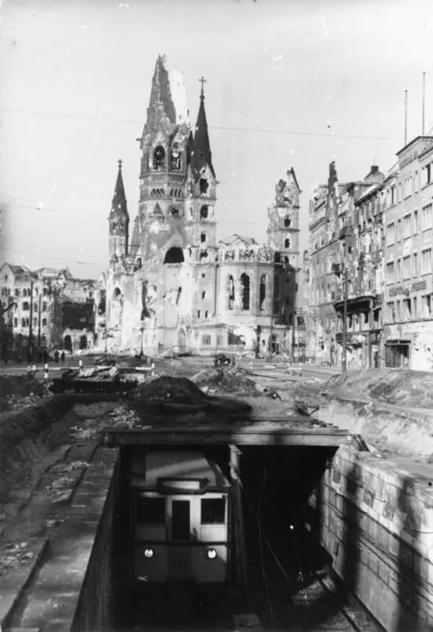

Scegli un nodo: ogni data sarà distinta come condizione, decisione, istituzione, processo o conseguenza.
01 · Prima di sapere
È una superficie
o ciò che resta?
Nessun autore, titolo, data o luogo. Prima vengono bordo, densità, apertura, materia e la posizione dalla quale osservi.
Sto osservando un’immagine costruita oppure ciò che resta dopo una distruzione?

Scegli un marcatore
Nomina ciò che è visibile prima di ricostruire un evento. Una frattura non racconta da sola la propria causa.
02 · Dall’immagine occupata all’immagine ferita
Dopo la propaganda,
l’immagine non torna innocente.
Il modulo precedente mostrava immagini organizzate dal potere. Dopo il 1945 restano censura, fotografia, istituzioni e mercato; cambia la fiducia concessa alla rappresentazione.
Limite: un documento non è trasparente, una testimonianza non è una fotografia totale, una rovina non indica da sola cause e responsabilità, un’opera astratta non è automaticamente più etica.
03 · Il 1945 non è un anno zero
La guerra finisce.
Le sue strutture non svaniscono.
Liberazione, rimpatrio, processi, ricostruzione e memoria hanno tempi differenti. Fascismi, colonialismi, gerarchie e responsabilità continuano dentro nuove istituzioni.
Rete non deterministica
Seleziona un nodo. Le scelte artistiche emergono dall’intreccio, non da una causa che determina uno stile.
Genocidio degli ebrei d’Europa, organizzato da istituzioni, leggi, deportazioni e uccisione di massa naziste con collaborazioni differenti.
Bombardamenti atomici del 6 e 9 agosto 1945: decisioni militari e politiche, tecnologia, vittime, hibakusha e memorie conflittuali.
Bombardamenti, occupazioni, combattimenti, sfollamenti e violenze contro civili: non sinonimo di genocidio.
04 · Che cosa significa irrappresentabile?
Non è un divieto.
È un problema di responsabilità.
“Irrappresentabile” può indicare un limite etico o formale, non l’impossibilità di documentare. Adorno scrisse che «scrivere una poesia dopo Auschwitz è barbaro»; non decretò la fine dell’arte e in seguito riconobbe il diritto della sofferenza a esprimersi.
Quale limite?
Documento, memoria, spettacolo
La difficoltà di rappresentare non annulla il dovere di documentare. Impone provenienza, contesto, consenso, misura, finalità e attenzione a ciò che l’immagine non può dimostrare.
05 · La materia conserva qualcosa?
La materia non parla
senza un’operazione e un contesto.
“Informale” raccoglie ricerche diverse: Fautrier, Wols, Dubuffet, Hartung, Burri, Tàpies e Vedova non formano uno stile unico. Supporto, titolo, gesto, mostra e ricezione costruiscono il senso.
Diagramma originale: analizza operazioni materiali; non imita opere protette.
06 · Il gesto è una traccia del corpo?
La traccia registra qualcosa.
Non registra tutto.
Velocità, durata, gravità e distanza condizionano il segno. Film, fotografie e critica trasformano poi l’esecuzione in racconto. Pollock, Krasner e de Kooning non coincidono con il mito dell’artista istintivo.
1 gesto eseguito2 traccia lasciata3 documento dell’azione4 mito critico successivo
Confronta Pollock, Krasner, de Kooning, Sterne e Still nelle schede MoMA ↗
07 · Non tutta l’astrazione è gesto
Il colore può chiedere
tempo, distanza, corpo.
Rothko, Newman, Still e Frankenthaler costruiscono rapporti differenti fra campi, bordi e supporto. “Spirituale” e “sublime” sono interpretazioni, non proprietà automatiche del colore.
Limite: grande scala non equivale a sublime; silenzio non equivale ad apoliticità; ricezione dello spettatore e intenzione dichiarata non coincidono.
08 · Bucare la superficie, aprire lo spazio
Il piano diventa
spessore, luce, ambiente.
Fontana non “distrugge una tela per provocare”. Fori, tagli, neon e ambienti cercano uno spazio reale dentro l’era atomica, la radio, la televisione e le nuove immagini dell’universo.
Diagramma dello spessore: non permette di “creare un Fontana”.
09 · Italia: ricostruire significa scegliere
Realismo e astrazione
non distribuiscono automaticamente libertà e colpa.
Fronte Nuovo delle Arti e Forma 1 attraversano antifascismo, PCI, formalismo, ricostruzione e mercato. Le divergenze non cancellano reti comuni e traiettorie individuali.
Scegli un artista, gruppo o istituzione: vedrai posizione documentata, conflitto e limite della prova.
realismoastrazione
Riapertura del 1948 e Fronte Nuovo nella storia della Biennale ↗
Non è una scala morale e non è una linea sulla quale ogni artista occupa un punto stabile.
10 · La figura non scompare
Il corpo resta.
Non torna intatto.
Giacometti, Bacon, Dubuffet e de Kooning persistono nella figura con operazioni differenti. L’Esistenzialismo può essere una ricezione; non spiega automaticamente ogni solitudine o deformazione.
descrizione visivainterpretazionebiografiacontestoricezionelimite
11 · Il dopoguerra non ha un solo centro
Non una staffetta.
Una rete di traduzioni e squilibri.
Parigi e New York restano potenti, ma Milano, Roma, Venezia, Kassel, Copenaghen, Amsterdam, Ashiya, Tokyo, São Paulo e Rio costruiscono scambi che non seguono una sola direzione.
Scegli una città. La rete mostrerà mostra, rivista, istituzione, traduzione e limite della documentazione.
Approfondimento · Gutai
Materia, corpo, tecnologia, ambiente
Fondato ad Ashiya nel 1954 sotto la guida di Jirō Yoshihara, Gutai non è “Espressionismo astratto giapponese”. Shiraga agisce con il corpo sospeso, Murakami attraversa la carta, Tanaka trasforma circuito e abito, Yoshihara organizza rivista e scambio internazionale.
Scegli un caso: operazione, ambiente, documentazione e limite resteranno distinti.
Collezione dell’Ashiya City Museum ↗12 · Chi organizza la libertà dell’arte?
La libertà esposta
ha selezionatori, fondi e didascalie.
Un’opera nasce con intenzioni proprie, poi passa attraverso critici, gallerie, musei, biennali, prezzi, fotografie e Stati. Il Congress for Cultural Freedom ricevette sostegno occulto della CIA; questo non rende gli artisti agenti consapevoli.
operaselezionemostraricezione
13 · Secondo sguardo
La superficie
non era un’opera.
Era già una selezione: luogo, momento, inquadratura, archivio, didascalia e riuso.
Rivelazione
Otto Donath
Berlin, Tauentzienstraße, beschädigter U-Bahn-Schacht
- Data
- 1945
- Oggetto
- Fotografia documentaria in bianco e nero
- Luogo
- Tauentzienstraße, Berlino; sullo sfondo la Kaiser-Wilhelm-Gedächtniskirche
- Archivio
- Bundesarchiv, Allgemeiner Deutscher Nachrichtendienst – Zentralbild
- Segnatura
- Bild 183-M1205-334
- Licenza
- CC BY-SA 3.0 DE
- File locale
- 549 × 800 px, WebP, nessun ritaglio
Limite: documenta un luogo danneggiato, non prova da sola causa, cronologia del danno, responsabilità, esperienza degli abitanti o intenzione del fotografo.
La tua prima nota
Nessuna nota ancora.
Atlante conclusivo
Seleziona una voce per collegare forma, storia, istituzione e limite.
Sintesi delle azioni
Non ciò che “sei diventato”.
Ciò che hai realmente fatto.
Nessuna attività registrata.
Verifica finale · 16 nuclei
Non una media.
Sedici comprensioni necessarie.
0 / 16 nuclei
16 / 16
Hai risposto correttamente a tutti i nuclei, compresi gli eventuali recuperi.
L’arte non ripara la catastrofe. Può però impedire che la superficie torni a sembrare intatta.